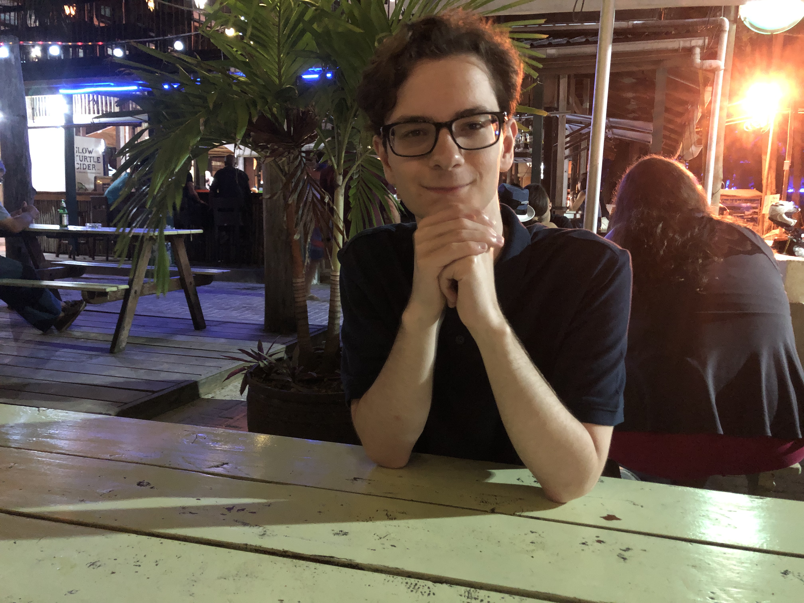

Hi,
My name is Andrew Stevenson. I'm a third year student studying computer science at Durham University.
Time and Again is a tile-based puzzle game, which was developed with unity in 1 week for the Brackeys game jam 2020.2. It was placed 5th out of over 1,800 games submitted by over 8,800 participants. At the time this was the 2nd largest game jam ever hosted by Itch.io.
A website created for the St Cuthbert's Hospice charity by a team of 6 Durham students. This project involved constructing a user friendly website with features such as mobile support and donation functionality, supported by a custom-built CMS. The website was constructed using node.js, react, and mongoDB.
Honourable Retreat is a puzzle game about trying to escape a dungeon. It was created using unity in 48 hours for the GMTK game jame 2020 by Andrew Stevenson and Sam Bell.